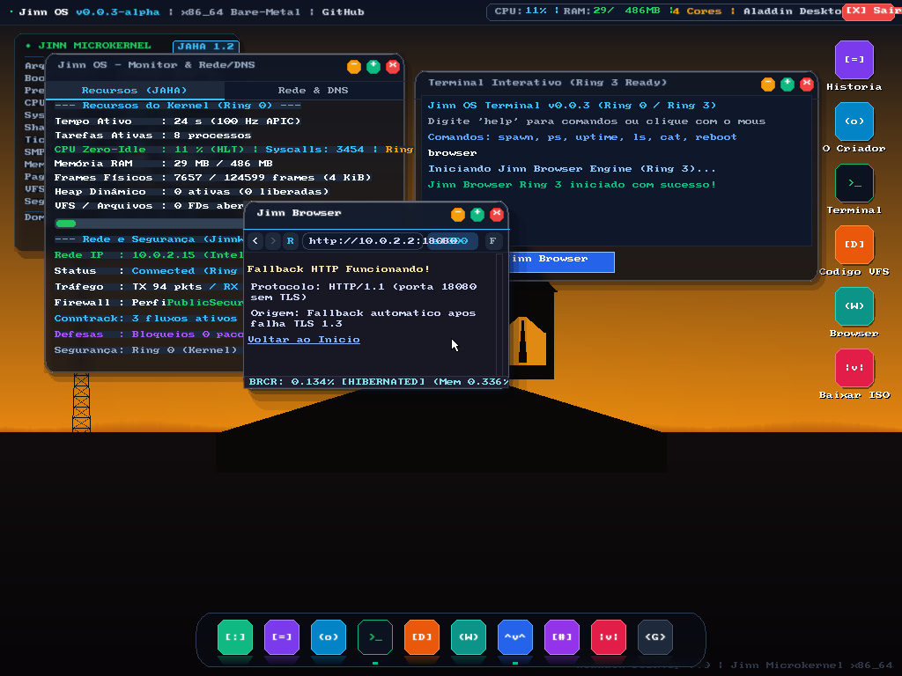
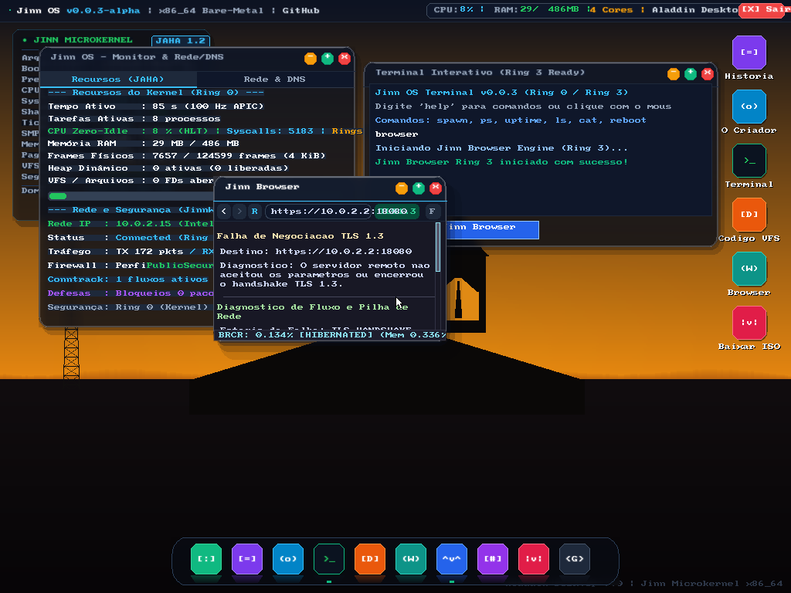

Protocol Fallback in Experimental Browsers: Trade-offs de Confiabilidade, UX e Auditoria Anti-Downgrade no Jinn Browser
Parte 3 da série Jinn Browser — Internet Connectivity, TLS and Network Observability. Quando um usuário digita um domínio sem prefixo (ex.: frogfind.com ou um servidor local legado na porta 80), navegadores precisam decidir entre tentar HTTPS primeiro, falhar em definitivo ou recorrer a HTTP. Neste RFC documentamos a implementação experimental do fallback no Jinn Browser e auditamos abertamente os riscos de downgrade identificados no código atual antes de promovê-la para uso geral.
1. Comportamento Atual & Diagnóstico da Auditoria de Código
Em apps/ola-mundo/src/main.rs, a função resolve_target_with_mode (linhas 3446–3486) classifica a URL de entrada em três políticas:
- Entrada explícita
https://: defineallow_http_fallback = false— se TLS 1.3 falhar, exibe erro explícito sem rebaixar a conexão para texto claro. - Entrada explícita
http://: conecta direto na porta 80 sem tentativa inicial de TLS. - Domínio sem esquema: normaliza para
https://comallow_http_fallback = true; em caso de erro emfetch_http_document_inner,browser_load_and_display(linhas2789–2817) reenvia a requisição emhttp://.
3 Brechas Concretas Encontradas na Auditoria de Segurança
- Ausência de indicador dedicado de downgrade: em
browser.rs(5166–5173), a badge exibe apenasTLS1.3oue1000— não há selo distinto indicando que ocorreu fallback após falha HTTPS (HTTP (SEM TLS)). - Redirecionamentos
301/302/307/308e<meta refresh>permitem downgrade silencioso: um salto dehttps://paraLocation: http://...(main.rs:2524–2546e2838–2860) continua aceitando texto claro sem bloqueio nem HSTS. - Subrecursos
<img>liberam fallback mesmo em páginas HTTPS:prefetch_page_images(main.rs:2688) invocafetch_http_document_inner(..., true, ...)comallow_http_fallback = true.
2. Evidência Visual: Fallback Sem Esquema vs. Bloqueio em https:// Explícito

e1000 (ponto apontado pela auditoria para evolução).

https://, allow_http_fallback = false impede transição automática para HTTP e expõe o diagnóstico TLS_HANDSHAKE.
3. Melhorias Planejadas Antes de Claims Comerciais
Para tratar fallback como funcionalidade segura e não apenas conveniência experimental, o roadmap de hardening define: badge vermelha/âmbar explícita quando houver downgrade, bloqueio de redirecionamentos https:// → http:// em sessões explicitamente HTTPS, remoção de allow_http_fallback = true no carregamento de imagens de páginas seguras, bloqueio de envio de formulários sem confirmação explícita após downgrade e suporte a política HSTS.
4. Aplicabilidade: Indústria, Uso Doméstico e Servidores
Usos Industriais & Redes Isoladas (OT/ICS)
Em intranets industriais segmentadas sem infraestrutura ACME/CA interna, o fallback controlado permite alcançar painéis legados apenas HTTP quando não há risco de exposição externa — desde que acompanhado de indicação visual inequívoca ao operador.
Usos Domésticos & Navegação Web Clássica
Acesso transparente a portais retro/textuais HTTP sem obrigar o usuário a saber de antemão a porta/esquema, enquanto links ou bookmarks com https:// explícito jamais silenciam erros TLS.
Usos em Servidores & Ambientes Auditáveis
Em servidores, o recomendável é desabilitar fallback por padrão (strict HTTPS-only), mantendo a política explícita para endpoints internos HTTP conhecidos e testando cenários adversariais contra intermediários ativos (MITM).
5. Limitações Conhecidas
O mecanismo atual de fallback é uma decisão experimental de UX em evolução. Uma resposta HTTP bem-sucedida após falha TLS não comprova legitimidade do servidor remoto; combinada à ausência de HSTS e de verificação X.509 completa em Ring 3, não deve ser usada para autenticação ou transmissão de dados sensíveis neste estágio.
Jinn Engineering Observatory • Semântica & Colaboração Aberta
Domínios Técnicos & Ecossistemas Relacionados
Badges clicáveis indexados por bancada, domínio de engenharia e organizações/padrões do Radar Expandido (Nível B contextual, sem endosso implícito):
Aplicabilidade: Indústria, Uso Doméstico e Servidores
Gateways industriais, coletores SCADA e frotas com links intermitentes via SharedRings SPSC (4096 B), HotRouteTable e diagnóstico de falha por estágio.
Navegação ágil com DNS 3 camadas (/disk/hosts → LRU → upstream) e fallback resiliente de conectividade.
Caminhos críticos IPC lock-free e observabilidade de pilha TCP/TLS 1.3 no_std com inspeção direta por syscalls.
Chamada Aberta para Pilotos (Indústria Local, Universidades & Setor Público Ético)
Convidamos integradores de automação industrial, laboratórios universitários de arquitetura/SO e instituições públicas eticamente responsáveis a reproduzirem estes experimentos em silício real (fechando lacunas emulador vs. hardware da Tabela B) ou propor estudos-piloto com Jinn OS, Aladdin e JHCS.
![[Valid RSS]](/valid-rss-rogers.png "Validate my RSS feed")